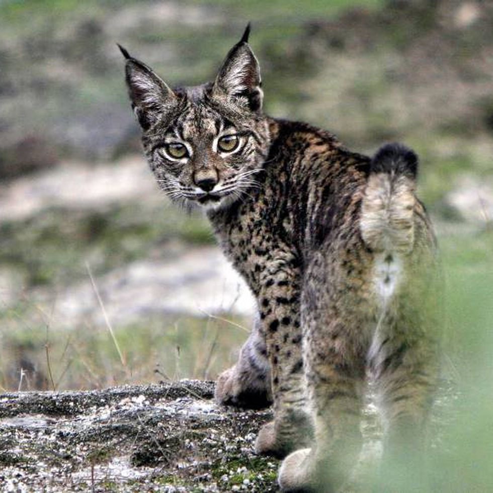

LINCE
se encuentra en peligro de extinción desde 1986. El lince es, junto con el oso
(del que hablaremos en otro artículot) y el lobo, uno de los tres grandes depredadores
europeos y el mayor felino que vive en estado salvaje en el continente europeo.
 |